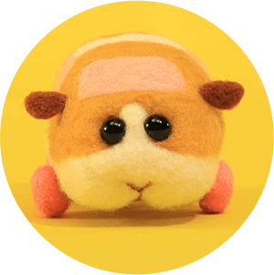
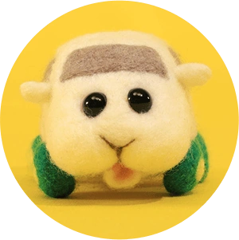
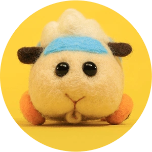
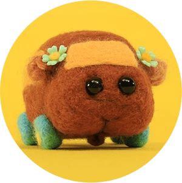

About
Pui Pui Molcar is a Japanese stop-motion short anime series produced by Shin-Ei Animation and Japan Green Hearts in cooperation with Bandai Namco Entertainment. The series is directed and written by Tomoki Misato, with Misato and the staff in Japan Green Hearts designing the characters and models and Shota Kowatsu composing the music. It aired in Japan on TV Tokyo through its Kinder TV children's variety program on January 5, 2021. The series' title is a play on the words Molmot (モルモット, morumotto, the Japanese word for guinea pig) and car, which reflects the main characters. Upon its release, it was received positively by fans and critics due to its simple storyline in each episode.
Several merchandise tied to the series were released, with Eikoh announced the characters of the series will be released as part of the Mochikororin Plush Mascot line of mini plush toys on February 5, 2021. Good Smile Company released a Nendoroid figure of Potato first announced on Wonder Hobby 33 in April 2022, that has compatibility with certain recently released Nendoroid figures.
Merch
Potato Nendoroid
$51.99
Moderoid Magical Angel Abbey
$8.99
11-Inch Shiromo, Ultrasoft Stuffed Animal
$11.99
Your Cart
Subtotal
$
Tax
2%
Shipping
$5.00
Total
$
Meet the Molcars!
Potato (ポテト, Poteto)
A male beige Molcar with orange patches. He is shown to be laid back but also ready to help anyone in need, something that is proven by helping out an ambulance Molcar weave through a traffic jam. Shown to like carrots.
Shiromo (シロモ, Shiromo)
A male white Molcar with a cowardly personality who easily gets into trouble. He yearns for Teddy "like an older sister", but his bad luck always leads him to trouble, from being hijacked to becoming a Zombie Molcar. Shown to like lettuce.
Abbey (アビー, Abī)
An off-white male Molcar with a spiky top and beginner's marks on the sides. He has a fear of cats which he had overcome with help from his friends. He also is profiled to be serious, curious, and extremely proud.
Choco (チョコ, Choko)
A female chocolate brown Molcar with flowers on her ears/side mirrors. Although profiled to be as somewhat of a fashionista, she is also shown to be strong and fit.